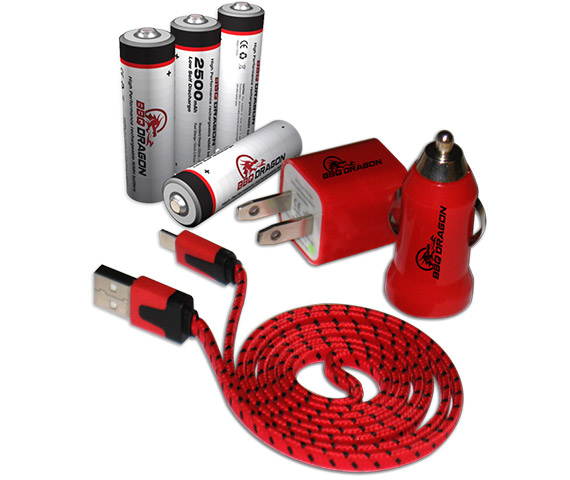

CLOSE X

If you don't agree that the BBQ Dragon is the biggest advancement in barbecue since slow cooking, we’ll refund your full purchase price! No questions asked!
(buyer pays return shipping)
If you don't agree that the BBQ Dragon is the biggest advancement in barbecue since slow cooking, we’ll refund your full purchase price! No questions asked!
(buyer pays return shipping)
An Incredible Two-Year Limited Warranty on every BBQ Dragon!
What Does This Warranty Cover?
This warranty covers any manufacturing defects or malfunctions in your new BBQ Dragon.
How Long Does The Coverage Last?
This warranty lasts for two (2) years from the date you purchased your BBQ Dragon. Coverage terminates if you sell or otherwise transfer ownership of the Device. Proof of purchase required.
What Will BBQ Dragon Do?
BBQ Dragon will, at their discretion, repair or replace your BBQ Dragon. You must pay shipping charges.
What Does This Warranty Not Cover?
Batteries, battery damage, or any problem that is caused by abuse, misuse, or an act of God (such as a flood) are not covered. Damage caused by heat is not covered. Damage from dropping, submersion, or other mistreatment is not covered. Lost parts are not covered. BBQ Dragons that have been serviced or dissembled by the consumer are not covered. Also, consequential and incidental damages are not recoverable under this warranty. Some states do not allow the exclusion or limitation of incidental or consequential damages, so the above limitation or exclusion may not apply to you.
How Do You Get Service?
If something goes wrong with your BBQ Dragon, refer to our website, www.bbqdragon.com, for return instructions. An RMA may be required.
How Does State Law Apply?
This warranty gives you specific legal rights, and you may also have other rights which vary from state to state.
